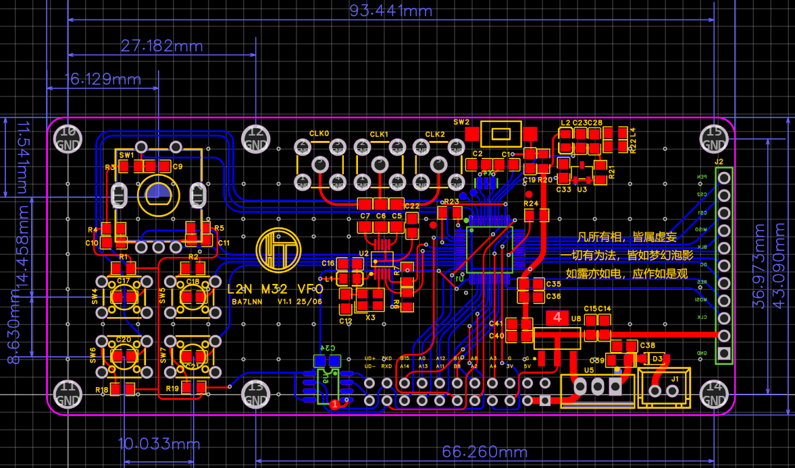
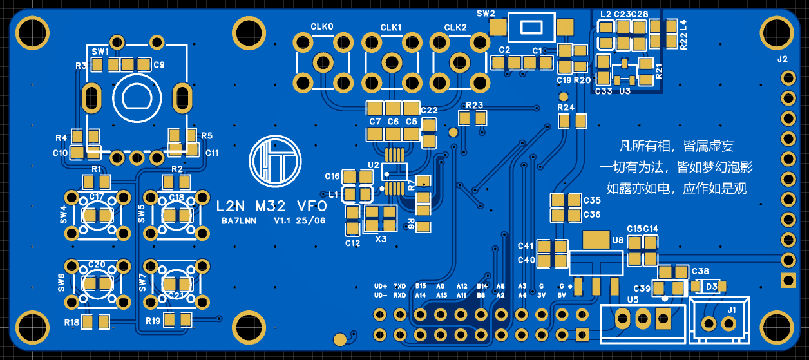
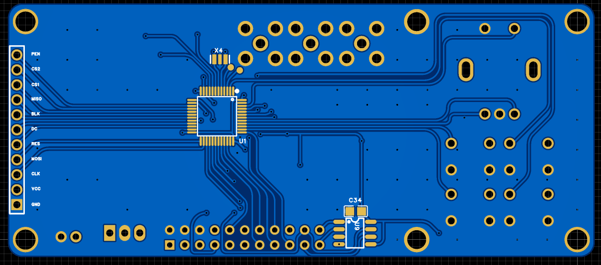

BA7LNN @ Radio Amateurs
L2N M32 VFO
功能概要：
- → 支持USB/LSB/CW/FT8
- → 中频8MHz
- → 2.4英寸ILL9341彩屏幕(240*320)
- → STM32F103/F405单片机
- → Si5351(SILICON LABS)/MS5351(国产)



引脚功能概要
- → PA4 ：PTT输出引脚，当手咪按下时，此时引脚低电位， 屏幕“R”字样变为“T”表 示由接收状态进入发射。
- → PA3 ：波段选择，用于驱动继电器，选择7m或是14m
- → PA2 ：SWR_F, 驻波输入正向功率
- → PA8 ：SWR_R, 驻波输入反向功率
- → PB8：输出引脚, 处在cw模式时，此时引脚低电位， 屏幕“CW”字样
- → PB14：接收与发射切换引脚
- → PA11(D-), UART RXD引脚
- → PA12(D+), UART TXD引脚
- → PA13(SWD) ： ST-LINK引脚, SWDIO
- → PA14(SWC) ： ST-LINK引脚, SWCLK
- → PA0 ：
- → PB7 ：
- → RXD ：CH340N TX引脚
- → TXD ：CH340N RX引脚
- → UD- : USB D- 线引脚
- → UD+ : USB D+ 线引脚
- → PB4 ：EC11编码器A向
- → PB5 ：EC11编码器B向
- → PB9 ：EC11编码器按键
频率输出:
- → CLK0: 输出中频：8M或9M
- → CLK2: 输出中频：8M或9M
- → CLK1: 输出VFO
联系方式
- → Mobile: +86 137 2586 0789
- → Email: ba7lnn@foxmail.com
© 2023.01-2025.03. BA7LNN . All rights reserved.